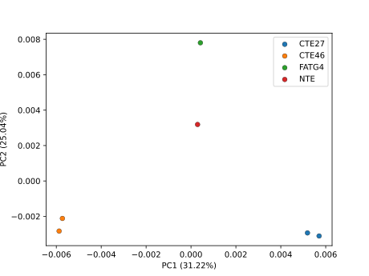
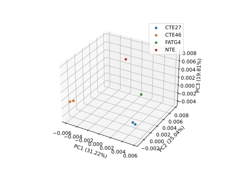

Using RNA-clique with non-SPAdes data
RNA-clique was originally designed to work with transcriptme assemblies produced by rnaSPAdes, so RNA-clique's default behavior assumes that the input transcriptome data looks like an rnaSPAdes transcriptome assembly. If you would like to use RNA-clique with a different kind of data, such as an assembly created with a different transcriptome assembler, some extra steps may be necessary to get RNA-clique to use your data properly. This guide documents the process of transforming transcriptomes produced using a different assembler, Trinity, to be used with RNA-clique.
Structure of input data for RNA-clique
The formats guide explains that the overall inputs to RNA-clique are a number of "transcriptomes" that have been organized into directories in a specific way that will shortly be reiterated here. In this context, a transcriptome is a FASTA file containing sequences, contigs, representing RNA transcripts. A transcriptome is assumed to have been assembled into contigs from shorter RNA-seq reads. Each transcriptome is associated with exactly one "sample," and vice versa. The samples are the subjects of the distance matrix; the distance matrix gives pairwise distances between samples. Typically, each sample represents an individual, though multiple samples might correspond to the same individual.
RNA-clique needs each transcriptome FASTA file to be in its own, separate
directory, and it needs all the transcriptome FASTA files to be named the same
thing. By default, RNA-clique wants all of the transcriptomes to be named
transcripts.fasta (since this is the default transcriptome output filename
from rnaSPAdes), but the name it expects is configurable. The names of the
directories in which the transcriptome FASTA files are found are taken to be the
names of the samples.
An example structure is shown below; it should be helpful for understanding this aspect of RNA-clique's expected input.
.
└── data
├── sample1
│ └── transcripts.fasta
├── sample2
│ └── transcripts.fasta
└── sample3
└── transcripts.fasta
In the example above, we have three subdirectories corresponding to three
samples; they are named sample1, sample2, and sample3. Each sample
directory contains a transcripts.fasta file; these are the transcriptome FASTA
files.
RNA-clique also expects the FASTA headers of the transcriptome FASTA files to have a particular structure. Specifically, RNA-clique expects to be able to parse a coverage value, gene ID, and isoform ID from each transcript's FASTA header. These pieces of information are described in the table below.
| Name | Type | Description |
|---|---|---|
| Coverage | float |
\(k\)-mer coverage of the transcript, interpreted as amount of input sequence data contributing to transcript. |
| Gene ID | int |
Non-negative integer indicating to which gene (set of isoforms) the transcript belongs. |
| Isoform ID | int |
For alternatively spliced genes, indicates which splice isoform of the gene a transcript represents. |
There are a few important things to note about these data expected in the FASTA headers. The first is that each datum is associated with a specific type. I've given the name of the Python type in the table above, but I will explain further here. The coverage value must be a floating-point number, a decimal representation of some real value. The coverage can have a non-integer part, but the same is not true for the gene and isoform IDs. Both the gene and isoform IDs must be non-negative integers.
The second thing to note is that that RNA-clique expects each pair of gene and isoform IDs to be unique within a file. For example, it's okay to have two transcripts with the pairs (15, 0) and (15, 1), or two transcripts with the pairs (15, 0) and (16, 0), but it's not okay to have two transcripts both with the pair (15, 0).
The third thing to note, which is a consequence of the first and second points, is that RNA-clique likely will not work out of the box with other schemes for naming transcripts, which might include non-integer IDs, duplicate gene ID, isoform ID pairs, etc. Hence, when using custom data (i.e., data not from SPAdes), it is often necessary to customize RNA-clique's behavior through its options, or else transform the data to a structure that RNA-clique can understand.
By default, RNA-clique uses the Python regular expression (regex)
^.*cov_([0-9]+(?:\.[0-9]+))_g([0-9]+)_i([0-9]+) to parse transcripts FASTA
headers. The outer subpatterns surrounded in parentheses are the regex capture
groups corresponding to the coverage, gene ID, and isoform ID, in that
order. (The group beginning with ?: is a non-capturing
group.)
This default regular expression is designed for transcript headers produced by
SPAdes. For example, the transcript ID NODE_60_length_9007_cov_18.269145_g4_i1
would be parsed by the default regex as having coverage 18.269145, gene ID
4, and isoform ID 1. An elided transcriptome file with further examples is
shown below.
>NODE_1_length_15383_cov_32.255511_g0_i0
GCAATTCTGAGGTTGCACTGAAGTTGCTTACCCCTGAGACACTTCAAAAAAGGCTTGACC
...
>NODE_2_length_13485_cov_13.005433_g1_i0
GCATTAAGTAAAATAGGCATTTTTGCAACTGCTGCTGCCAAGGAATATGATCTTCATCTA
...
>NODE_3_length_12939_cov_21.108534_g2_i0
CCTGCTCTTCCTGGAACCCTAGCCCCCTCGCCCCGCCGGGCGCGCGGAGGCAACGGATTC
...
>NODE_4_length_12591_cov_11.064742_g3_i0
GGCTCGTCGACGGGCTCGTCCCAGCAGAAATGCAGAAATGCCCTGTTTTGCCAAGCATGA
...
The regex used by RNA-clique to parse transcript FASTA headers can be customized
via command-line options or via a configuration file. The order of the capture
groups can even be changed. See the
transcript_id_regex section of the
configuration guide for further explanation and examples. Although we will take
advantage of custom transcript header regexes for this tutorial, custom regexes
will not suffice to get RNA-clique to recognize our data; we will also need to
change the FASTA headers to meet the expectations for the coverage, gene, and
isoform IDs described above.
Check your environment
Before we begin, check that your RNA_CLIQUE and TUTORIAL_DIR environment
variables are set and pointing to the RNA-clique root directory and the working
directory for the tutorial, respectively.
If either of these commands prints an empty line or prints a path to a directory that does not exist, you may need to reset the environment variables to the values described in the "Creating a directory for our work" section of the end-to-end tutorial.
Also, check that you are in the rna_clique_venv virtual environment. You
should see (rna_clique_venv) at the beginning of your prompt. If not, try
activating the environment with
Downloading custom transcriptome data
Note
If you downloaded this software from Zenodo, you already have the
Trinity assemblies in the test_data/trinity_assemblies directory under the
root of the repository. Instead of following the steps in this section, you
can simply move them to the expected destination.
For the remainder of this tutorial, we will be using transcriptomes assembled using the Trinity assembler. The transcriptomes were assembled from RNA-seq reads for the same set of six tall fescue RNA-seq libraries used in the end-to-end "From RNA-seq reads to a phylogenetic tree with RNA-clique" tutorial. Metadata for the six tall fescue samples are reproduced here, but please refer to the Background of the end-to-end tutorial for a more detailed explanation of what these samples represent.
| SRA Accession | Genotype | Endophyte |
|---|---|---|
| SRR2321388 | CTE46 | infected |
| SRR2321385 | CTE46 | minus |
| SRR8003761 | CTE27 | infected |
| SRR8003762 | CTE27 | minus |
| SRR7990321 | FATG4 | infected |
| SRR8003736 | NTE | infected |
Rather than have you assemble the transcriptomes yourself, we will have you download pre-assembled transcriptomes here. For an explanation of how to assemble the transcriptomes with Trinity, see the supplemental Trinity assembly guide. If you choose to follow that tutorial, you can skip to the next section.
First, make sure you are in your $TUTORIAL_DIR
Then, create a new directory for the Trinity assemblies and change to that directory.
Download the Trinity assemblies into that directory and untar them.
Examining the Trinity assemblies
If you now list the contents of your current directory, you should see immediately that the layout of the data does not match what RNA-clique expects, so we will have to fix that.
The assembled transcriptome for sample SAMPLE is found in
trinity_SAMPLE.Trinity.fasta. Note that the current structure of the data
within the filesystem won't work with RNA-clique because RNA-clique expects all
the transcriptomes to have the same name. RNA-clique also expects each
transcriptome to be in a different directory, but all six of our transcriptomes
are currently in the same directory.
If you also view the internal structure of the transcriptome files (using, for
example, less or more), you should see that the transcripts have FASTA
headers that look something like TRINITY_DN1000_c115_g5_i1 len=247
path=[31015:0-148 23018:149-246]. Superficially, the FASTA headers look similar
to rnaSPAdes's; there is a gene ID following g and an isoform ID following
i. There's also a number following a c, which you might assume is a coverage
value.
Unfortunately, the value after c is not a coverage value, and although the
numbers following g and i are gene and isoform IDs, respectively, their
semantics differ between Trinity and rnaSPAdes assemblies. From "Output of
Trinity
Aseembly"
from the Trinity Wiki,
The accession encodes the Trinity 'gene' and 'isoform' information. In the example above, the accession 'TRINITY_DN1000_c115_g5_i1' indicates Trinity read cluster 'TRINITY_DN1000_c115', gene 'g5', and isoform 'i1'. Because a given run of trinity involves many many clusters of reads, each of which are assembled separately, and because the 'gene' numberings are unique within a given processed read cluster, the 'gene' identifier should be considered an aggregate of the read cluster and corresponding gene identifier, which in this case would be 'TRINITY_DN1000_c115_g5'.
In summary, the gene ID here is actually TRINITY_DN1000_c115_g5, and the
isoform ID is i1 (1). Since RNA-clique expects gene IDs to be integers,
Trinity's gene IDs won't work with RNA-clique; we'll need to change them.
Trinity also does not encode coverage information into its transcript
IDs. Trinity does, however, compute the abundance of transcripts as "Transcripts
per Million" (TPM) via salmon. A file
mapping transcript IDs to TPM can be found under at
trinity_SAMPLE/salmon_outdir/quant.sf, where SAMPLE is the name of the
sample to which the TPM values refer. Since we ordinarily use coverage to
recognize the transcripts best supported by the input reads, we might be able to
use TPM as a surrogate for \(k\)-mer coverage.
If you examine the structure of one of the quant.sf files, you will see that
each quant.sf file maps the sample's transcript FASTA IDs to various metrics,
including TPM. We could use these quant.sf to map each transcript to a TPM
value and add that information to the transcript's ID.
Transforming transcriptomes to a usable format
The problems identified in the previous section suggest that the following actions must be taken to format the data to be usable with RNA-clique:
- Add coverage information to each transcript from corresponding
quant.sffile. - Rename transcripts to use integer gene IDs instead of string gene IDs.
- Move each transcriptome to a separate sample-specific directory and rename it
transcripts.fasta.
The subsections below describe one way of accomplishing these tasks in order.
Adding coverage information from quant.sf
Before we change the transcripts' FASTA headers, we need to use the original
FASTA headers to add TPM information from the quant.sf files. This would be
tricky to do with common command-line tools, so we will use a Python script
instead. The script is shown below and can also be found at
docs/tutorials/nonspades/add_tpm.py
under the root of the repository.
import argparse
import sys
from pathlib import Path
import Bio.SeqIO
import pandas as pd
def main():
parser = argparse.ArgumentParser()
parser.add_argument("transcripts", type=Path)
parser.add_argument("quant", type=Path)
args = parser.parse_args()
quant = pd.read_table(args.quant).set_index("Name")
#from IPython import embed; embed()
for transcript in Bio.SeqIO.parse(args.transcripts, "fasta"):
transcript.description = "tpm{}_{}".format(
quant.TPM[transcript.id],
transcript.description
)
transcript.id = "tpm{}_{}".format(
quant.TPM[transcript.id],
transcript.id
)
transcript.name = ""
Bio.SeqIO.write(transcript, sys.stdout, "fasta")
if __name__ == "__main__":
main()
The script writes the updated file to standard output. Let's create a new directory for the transcriptomes with TPM values added.
Then, run the script on all of the transcriptomes and write them to files named
after their samples in the with_tpm directory.
for f in SRR2321385 SRR2321388 SRR7990321 SRR8003736 SRR8003761 SRR8003762; do
python "$RNA_CLIQUE/docs/tutorials/nonspades/add_tpm.py" \
"trinity_$f.Trinity.fasta" \
"trinity_$f/salmon_outdir/quant.sf" > "with_tpm/$f.fasta";
done
If you examine one of the files in the with_tpm directory, you will see that
each of the transcript FASTA headers now includes a TPM value at the start. For
example, tpm6.55383_TRINITY_DN4828_c0_g1_i1 len=605 path=[0:0-604].
Using integer gene IDs
RNA-clique needs gene IDs to be non-negative integers, but Trinity outputs transcripts with gene IDs that contain other non-digit characters. To transform the data into a format that RNA-clique can recognize, we need to assign integer IDs for each of the genes and add those integer IDs to the sequence IDs. Again, performing this process using standard Unix command-line tools would be difficult, so we opt to use a Python script.
The script, also shown below, can be found at
docs/tutorial/nonspades/assign_gene_ids.py
under the root of the repository.
import sys
import re
from collections import defaultdict
import Bio.SeqIO
def counter():
"""Returns a function returning and incrementing counter i on each call."""
def increment():
nonlocal i
i += 1
return i
i = -1
return increment
trinity_gene_id_re = re.compile(r"TRINITY_DN\d+_c\d+_g\d+")
def main():
ids = defaultdict(counter())
for transcript in Bio.SeqIO.parse(sys.stdin, "fasta"):
gene_match = trinity_gene_id_re.search(transcript.id)
new_id = "{}_gid{}".format(
gene_match.group(0),
ids[gene_match.group(0)]
)
transcript.id = trinity_gene_id_re.sub(new_id, transcript.id)
transcript.description = trinity_gene_id_re.sub(
new_id,
transcript.description
)
Bio.SeqIO.write(transcript, sys.stdout, "fasta")
if __name__ == "__main__":
main()
We'll create another new directory for the transcriptomes with integer gene IDs added.
Then, use the script to add integer gene IDs for each of the files in
with_tpm.
for f in SRR2321385 SRR2321388 SRR7990321 SRR8003736 SRR8003761 SRR8003762; do
python "$RNA_CLIQUE/docs/tutorials/nonspades/assign_gene_ids.py" \
< "with_tpm/$f.fasta" > "integer_ids/$f.fasta";
done
If you look at the files in the integer_ids directory, you should see that
each transcript ID now has an integer gene ID in the format gidX, where X
is some integer. For example, one of the transcript FASTA headers could be
tpm6.55383_TRINITY_DN4828_c0_g1_gid0_i1 len=605 path=[0:0-604].
At this stage, we no longer need the intermediate files in with_tpm, so feel
free to delete them if you are low on space.
Renaming and moving transcriptomes
The final step is the easiest; we will move each transcriptome to its own
directory and then rename all of the transcriptomes to have the same name. This
can be done with a for loop and standard command-line Unix tools.
for f in SRR2321385 SRR2321388 SRR7990321 SRR8003736 SRR8003761 SRR8003762; do
mkdir "$f"
mv "integer_ids/$f.fasta" "$f"/transcripts.fasta
done
After running the for loop, the integer_ids directory should be empty, so go
ahead and delete it.
Running RNA-clique on the Trinity transcriptomes
Now that we have put the Trinity transcriptomes in a format that RNA-clique will
understand, we can try running RNA-clique on our new transcripts.fasta files.
Although we've put the transcriptomes into a format that RNA-clique should be
able to read, our FASTA headers are still not exactly the same as those produced
by SPAdes. To account for the difference, we will provide RNA-clique with a
regular expression for parsing our modified Trinity FASTA headers. A regex like
^.*tpm([0-9]+(?:\.[0-9]+)).*gid([0-9]+)_i([0-9]+) should work; it captures the
floating-point number immediately after tpm, the integer immediately after
gid, and the integer immediately after the gene ID and _i.
Tip
If you haven't had much experience designing regular expressions, you may want to test your regular expressions on an interactive regex tester like regex101. On regex101, you can even have the site explain a regex like the one given above. Make sure the tester you are using supports Python-flavor regexes.
Run RNA-clique on the transformed data.
rna-clique "$TUTORIAL_DIR"/trinity_assemblies/SRR* -n 50000 \
-O "$TUTORIAL_DIR/trinity_rna_clique_out" \
-p '^.*tpm([0-9]+(?:\.[0-9]+)).*gid([0-9]+)_i([0-9]+)'
Viewing results
As always, we can get a distance matrix with the export_matrix program.
python -m rna_clique.export_matrix --format table \
--header \
-O "$TUTORIAL_DIR/trinity_rna_clique_out"
Since we are using the same samples (with the same names) from the end-to-end tutorial, we can also use the PCoA plotting script from that tutorial to get a PCoA plot for the matrix based on the Trinity transcriptomes.
python "$RNA_CLIQUE"/docs/tutorials/reads2tree/make_pcoa.py \
"$TUTORIAL_DIR"/trinity_rna_clique_out
As in the end-to-end tutorial, the PCoA plots are written to the RNA-clique
output directory (in this case, "$TUTORIAL_DIR"/trinity_rna_clique_out).
The two-dimensional PCoA plot should look something like this:

The three-dimensional PCoA plot should look something like this:

Notice that the PCoA plots for the Trinity assemblies show the same patterns as those for the rnaSPAdes assemblies.